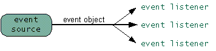

If you've read Handling Events or any of the component how-to pages, you probably already know the basics of event listeners.Let's look at one of the simplest event handling examples possible. It's called Beeper, and it features a button that beeps when you click it. You can run Beeper using JavaTM Web Start. Or, to compile and run the example yourself, consult the example index.
You can find the entire program in Beeper.java. Here's the code that implements the event handling for the button:Thepublic class Beeper ... implements ActionListener { ... //where initialization occurs: button.addActionListener(this); ... public void actionPerformed(ActionEvent e) { ...//Make a beep sound... } }Beeperclass implements theActionListenerinterface, which contains one method:actionPerformed. SinceBeeperimplementsActionListener, aBeeperobject can register as a listener for the action events that buttons fire. Once theBeeperhas been registered using theButtonaddActionListenermethod, theBeeper'sactionPerformedmethod is called every time the button is clicked.

A More Complex Example
The event model, which you saw at its simplest in the preceding example, is quite powerful and flexible. Any number of event listener objects can listen for all kinds of events from any number of event source objects. For example, a program might create one listener per event source. Or a program might have a single listener for all events from all sources. A program can even have more than one listener for a single kind of event from a single event source. Multiple listeners can register to be notified of events of a particular type from a particular source. Also, the same listener can listen to notifications from different objects. [PENDING: Update this diagram with an additional event source that also sends notification to the top-most event listener.]
Each event is represented by an object that gives information about the event and identifies the event source. Event sources are often components or models, but other kinds of objects can also be event sources.
Whenever you want to detect events from a particular component, first check the how-to section for that component. A list of the component how-to sections is here. The how-to sections give examples of handling the events that you're most likely to care about. In How to Use Color Choosers, for instance, you'll find an example of writing a change listener to track when the color changes in the color chooser.
The following example demonstrates that event listeners can be registered on multiple objects and that the same event can be sent to multiple listeners. The example contains two event sources (
JButtoninstances) and two event listeners. One of the event listeners (an instance of a class calledMultiListener) listens for events from both buttons. When it receives an event, it adds the event's "action command" (which is set to the text on the button's label) to the top text area. The second event listener (an instance of a class calledEavesdropper) listens for events on only one of the buttons. When it receives an event, it adds the action command to the bottom text area.
[PENDING: Updated screenshot forthcoming.]
You can find the entire program in
Try this:
- Run MultiListener using JavaTM Web Start. Or, to compile and run the example yourself, consult the example index.
- Click the Blah blah blah button. Only the
MultiListenerobject is registered to listen to this button.- Click the You don't say! button. Both the
MultiListenerobject and theEavesdropperobject are registered to listen to this button.MultiListener.java. Here's the code that implements the event handling for the button:In the above code, bothpublic class MultiListener ... implements ActionListener { ... //where initialization occurs: button1.addActionListener(this); button2.addActionListener(this); button2.addActionListener(new Eavesdropper(bottomTextArea)); } public void actionPerformed(ActionEvent e) { topTextArea.append(e.getActionCommand() + newline); } } class Eavesdropper implements ActionListener { ... public void actionPerformed(ActionEvent e) { myTextArea.append(e.getActionCommand() + newline); } }MultiListenerandEavesdropperimplement theActionListenerinterface and register as action listeners using theJButtonaddActionListenermethod. Both classes' implementations of theactionPerformedmethod are similar: they simply add the event's action command to a text area.